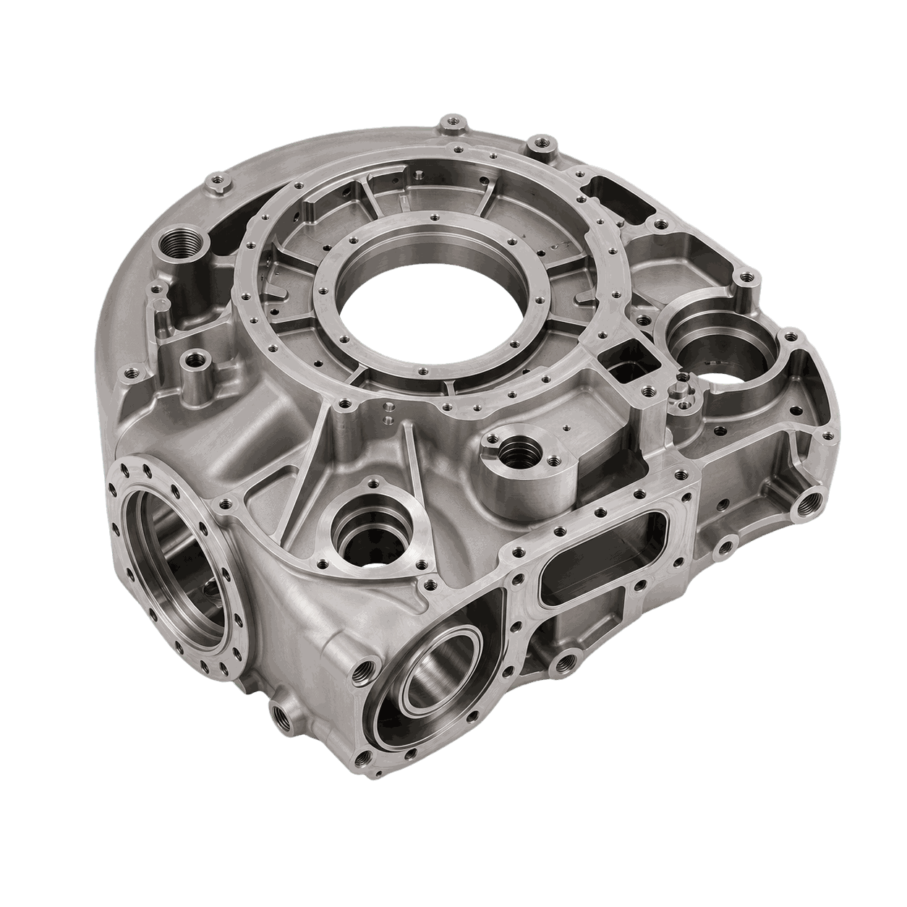
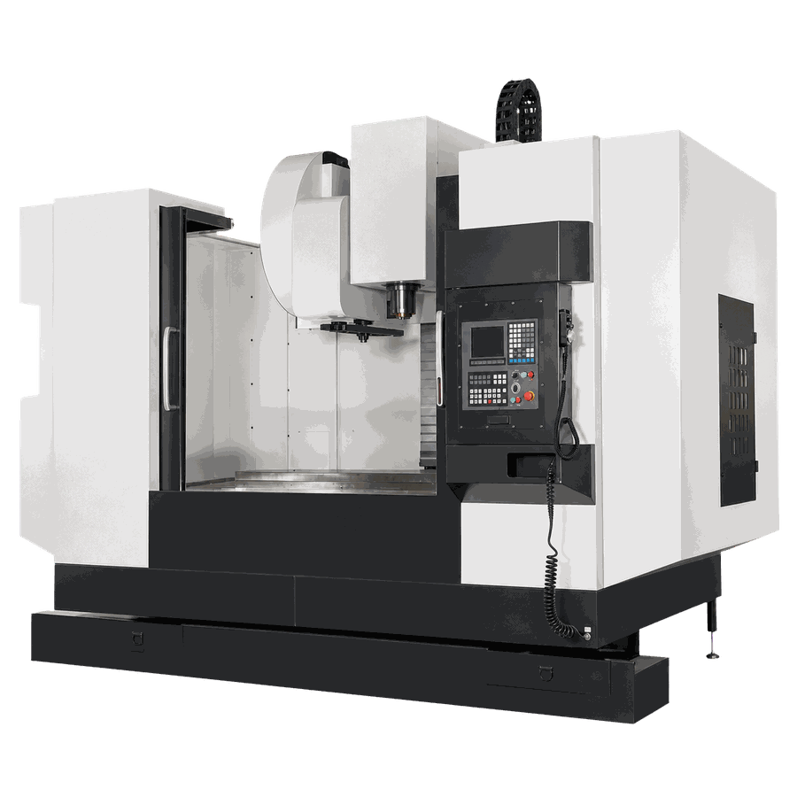
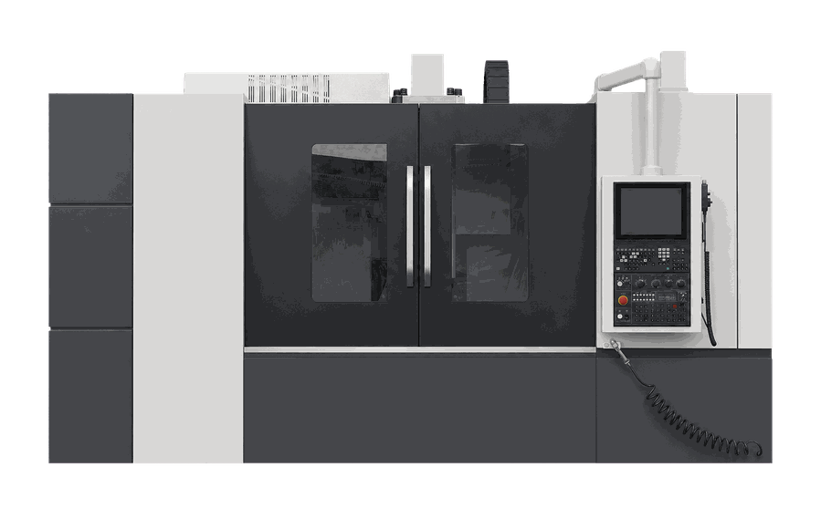
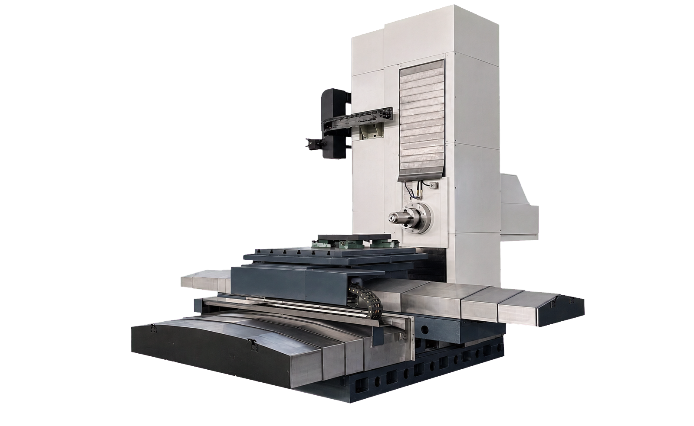
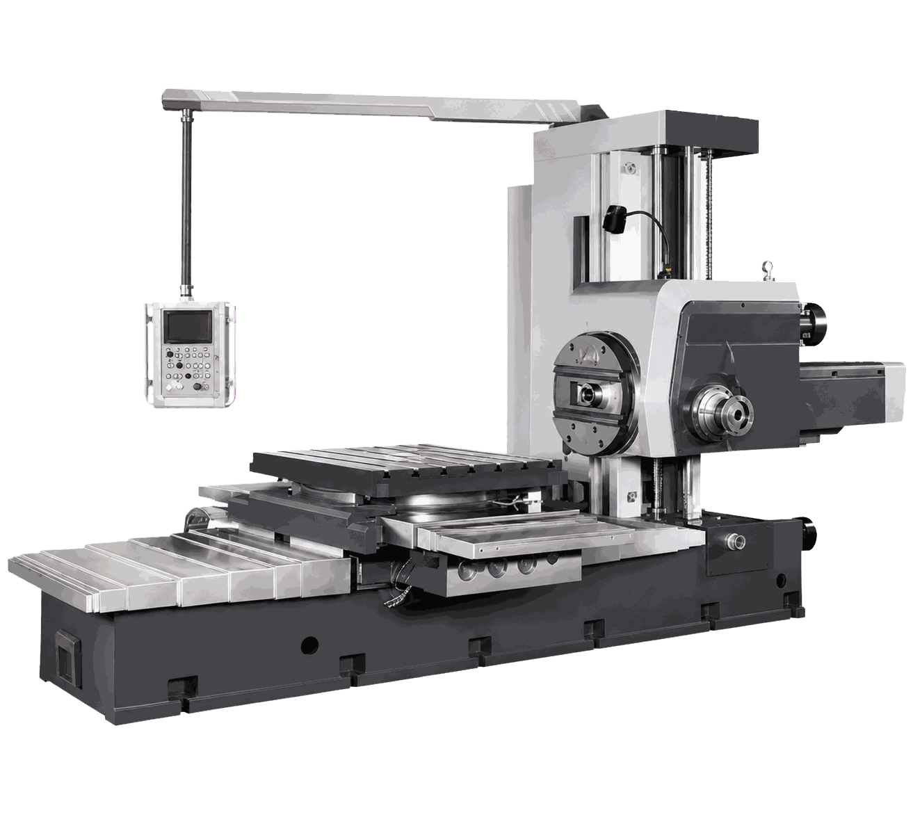
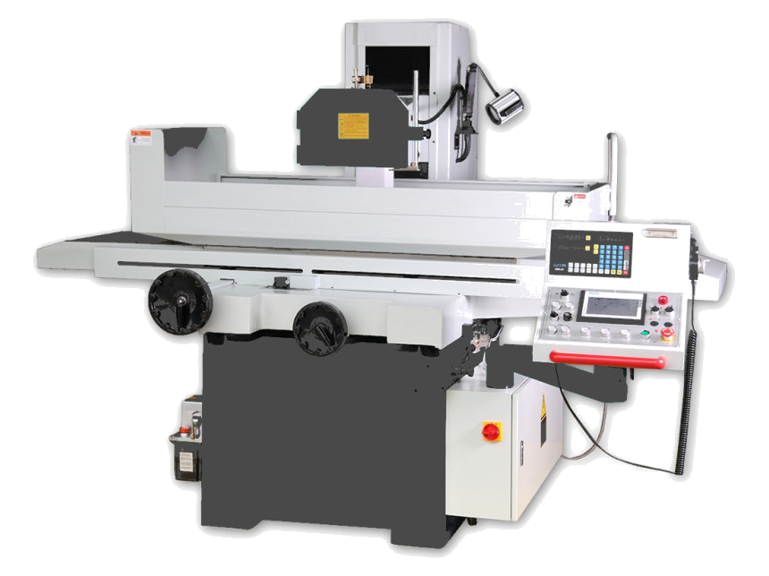
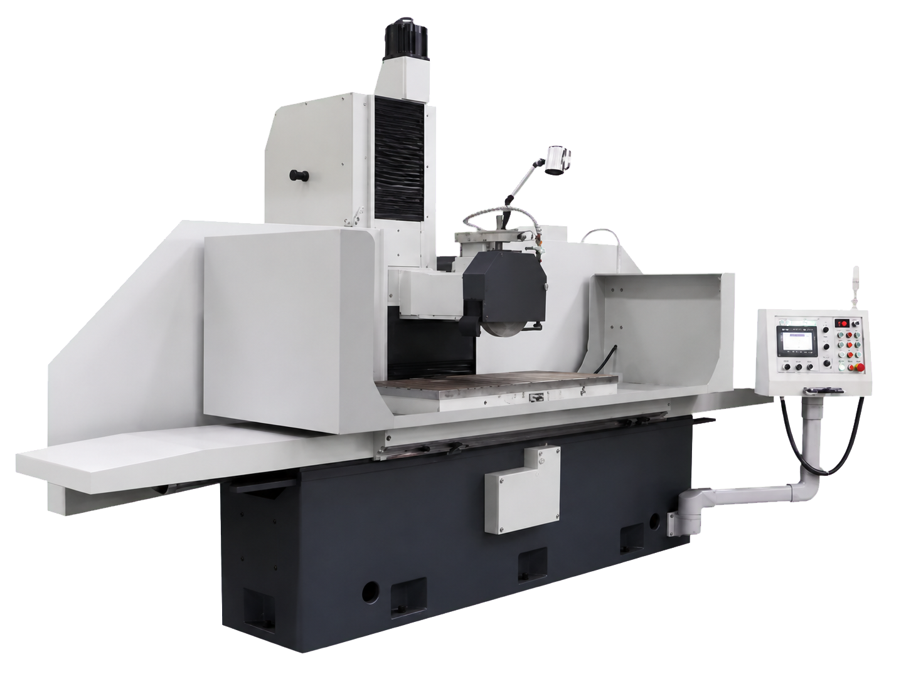

01
Фрезерование
Фрезерует базовые поверхности, окна, площадки крепления и контуры на корпусной или массивной детали.

Обеспечить точность базовых плоскостей, посадочных отверстий и сопрягаемых поверхностей детали «Прецизионный корпус».
Параметры ориентировочные. Финальная технология и состав оборудования уточняются по чертежу, материалу и программе выпуска.
Фрезерует базовые поверхности, окна, площадки крепления и контуры на корпусной или массивной детали.
Растачивает посадочные отверстия и соосные группы отверстий после формирования баз.
Доводит плоскости, торцы и базовые поверхности до требуемой шероховатости и стабильной геометрии.






Маршрут на странице — типовой для этого класса деталей. При смене материала или габаритов меняются режимы, инструмент и, возможно, типоразмер станка, а последовательность операций обычно сохраняется. Пришлите чертёж — технолог пересчитает решение под вашу деталь.
Чертёж или 3D‑модель, материал и состояние заготовки, годовую программу или размер партии, требования по точности и шероховатости критичных поверхностей. Если есть — фото текущего техпроцесса и список станков на участке.
Часто — да: в разделе «Станки в наличии» есть оборудование на складе в Нижнем Новгороде, его можно посмотреть и провести тестовую обработку. Другие внедрения в отрасли — на странице Космическая промышленность.